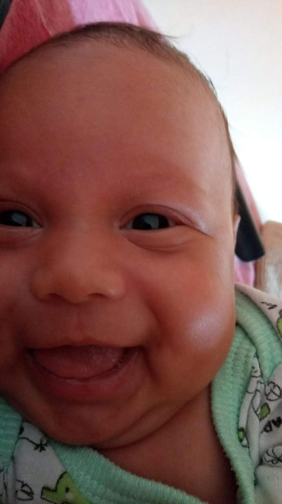
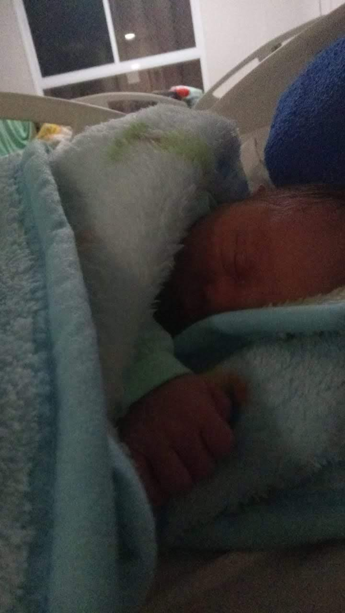
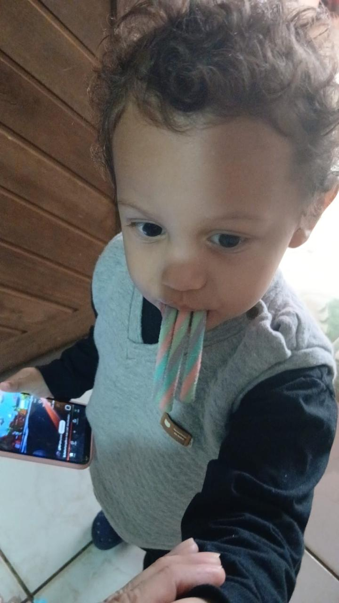
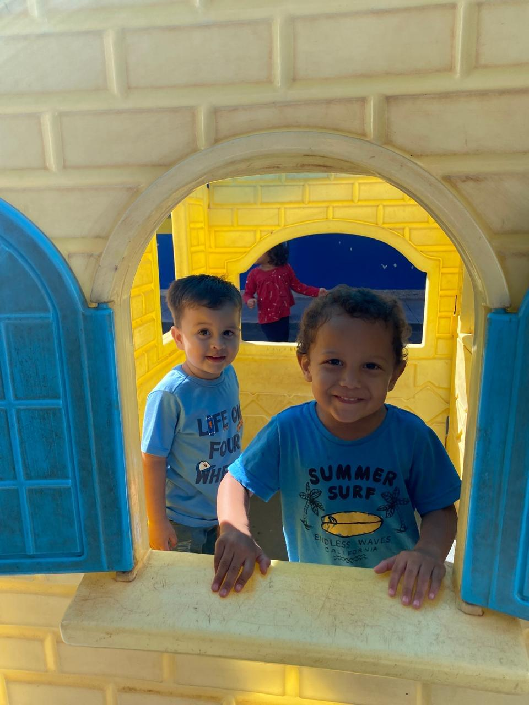
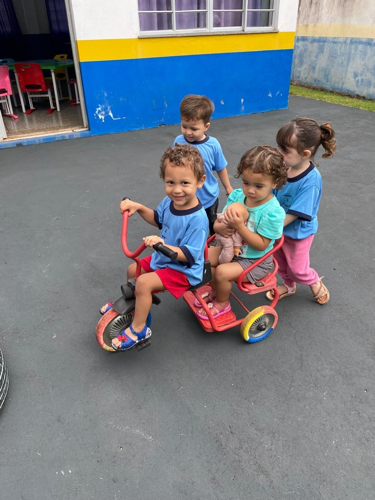
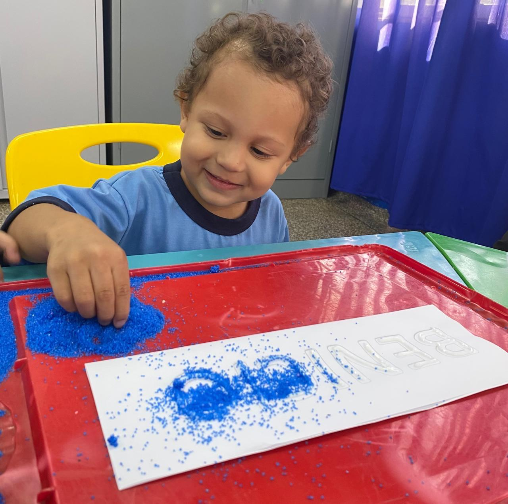
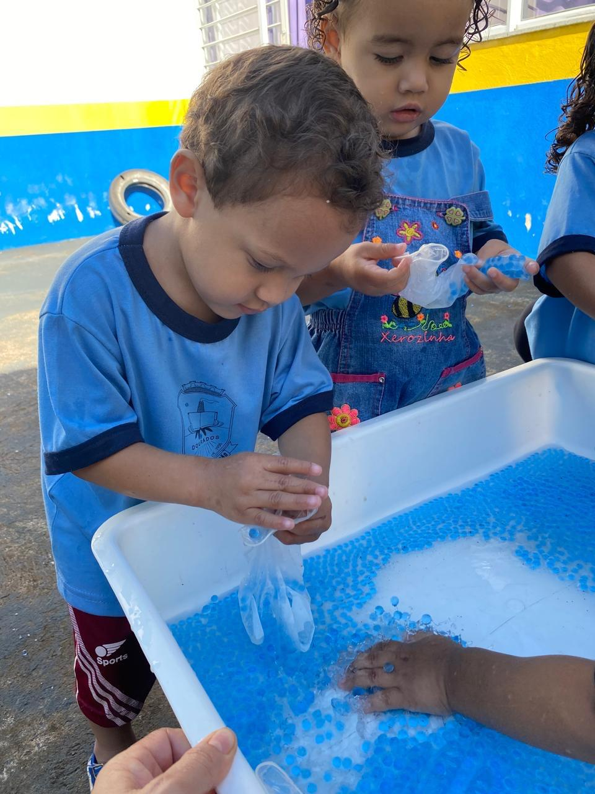
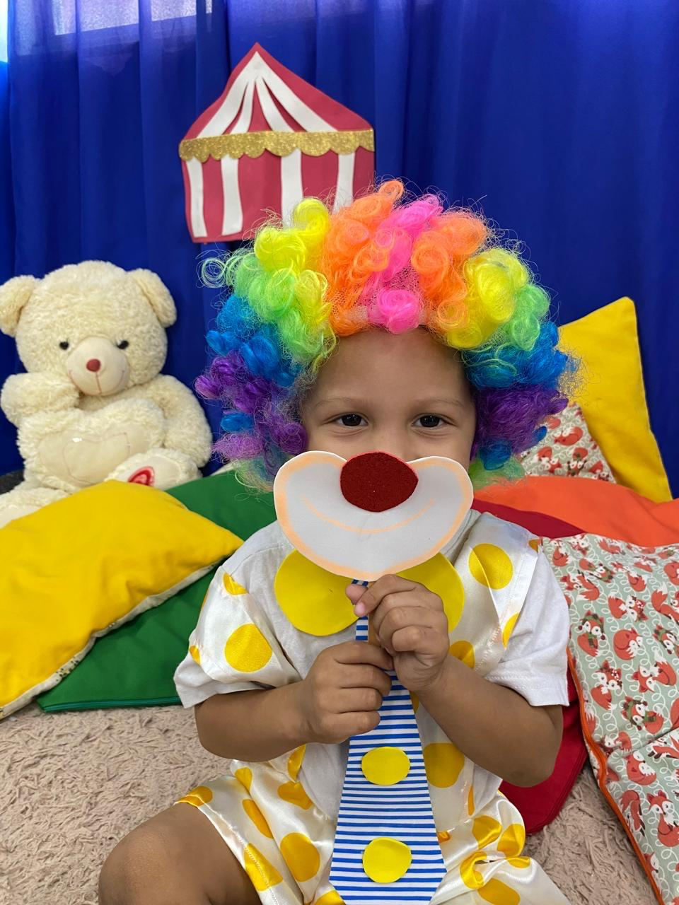
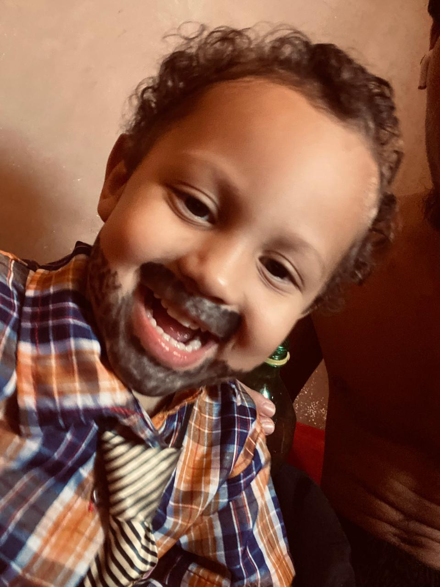
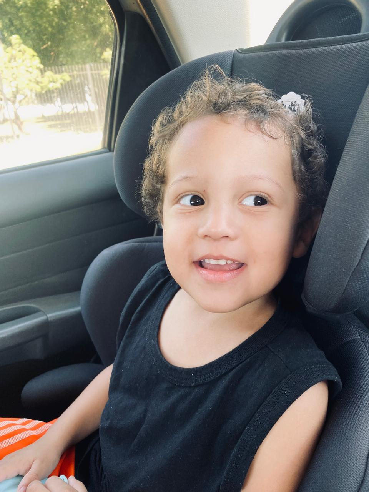

Hoje comemoramos três anos de muitas aventuras,
sorrisos e momentos inesquecíveis.
Espero acompanhar cada etapa da sua vida
e que este pequeno site seja uma forma de
guardar para sempre algumas das lembranças
mais felizes que vivemos juntos.
Cada sorriso seu ilumina nossas vidas e transforma dias comuns em momentos inesquecíveis.

O dia em que nossas vidas mudaram para sempre.
A chegada do Benício trouxe alegria,
esperança e muito amor para toda a família.

Cada sorriso, cada descoberta
e cada abraço fizeram nossos dias
muito mais felizes.
Você cresceu cercado de amor,
carinho e pessoas que sempre
torcerão pela sua felicidade.

Hoje celebramos um menino alegre,
inteligente, carinhoso e cheio de energia.
Que Deus continue iluminando seus passos
e realizando todos os seus sonhos.
Você é especial.

O primeiro dia do Benício na creche, um baita dia pro meu meninão, cheio de aventuras, novas descobertas e felicidades. orgulho do tata.

Primeira brincadeira em grupo do meu anjinho, um momento mais que especial, já que será o primeiro de muitos grupos que ele ira conquistar com seu charme. que você aproveite muito meu amor.

Lindo, maravilhoso, contemporâneo e de muito bom gosto. Puxou o amor e o talento com arte e esportes do irmão.

Primeiro "trabalho" do Benício. Ele deu tudo de si. Suou. Batalhou. Tentou preencher a luva. E conseguiu. Além de lindo, gentil e carismático, ele também é CLT, e dos bons.

Primeira vez que o Benício se fantasiou, e eu não tenho nem palavras pra descrever o quanto essa fantasia me deixou feliz. Ver seu olhar, sua felicidade e timidez pela primeira vez me deixa grato por poder estar vivo e experienciar sua vida. Te amo.

A primeira apresentação do meu caipira e a última apresentação que seu irmão foi ver sendo aluno do Vargas. Irônico... O seu início. O meu fim. Mas o que realmente importa é podermos viver isso juntos, meu amor.

Fomos visitar o quartel, ver o aeroporto e ver a cidade universitária. É impressionante como esses passeios, mesmo que simples, são tão alegres do seu lado.